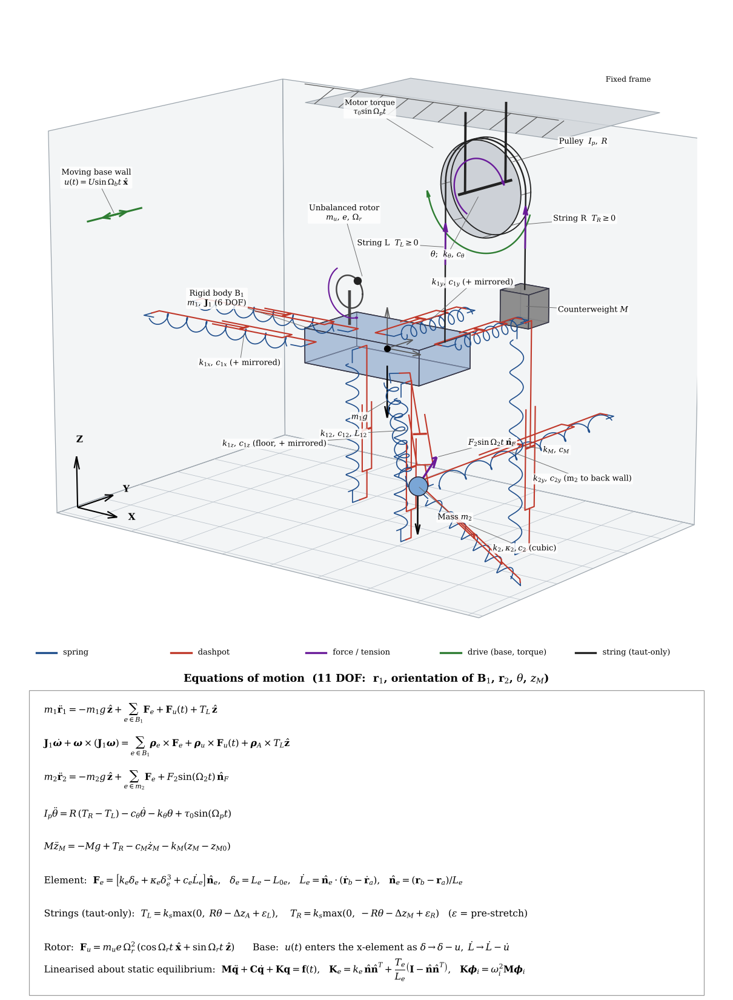

Mechanical engineering,
built and simulated.
UCLA mechanical & aerospace engineering student. Projects that combine physics-first modelling, Python, FPV drones, and CAD/3D printing.
See projectsGitHubProjects

in progress
Mass-Spring-Damper Simulation
A verified 3D Python solver for coupled rigid bodies, nonlinear springs, dampers and multiple driving forces, derived from first principles.
PythonLagrangian / Newton–EulerVibrationsDrone photo coming
in progress
FPV Drone Builds
Custom 5" and cinewhoop builds, Betaflight tuning, and Blackbox log analysis.
BetaflightPID tuning3D printingCAD renders coming
planned
CAD
Class CAD work and personal designs in SolidWorks, from model to drawing to printed part.
SolidWorksFDM